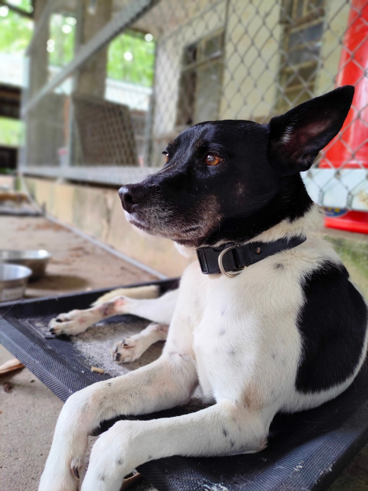
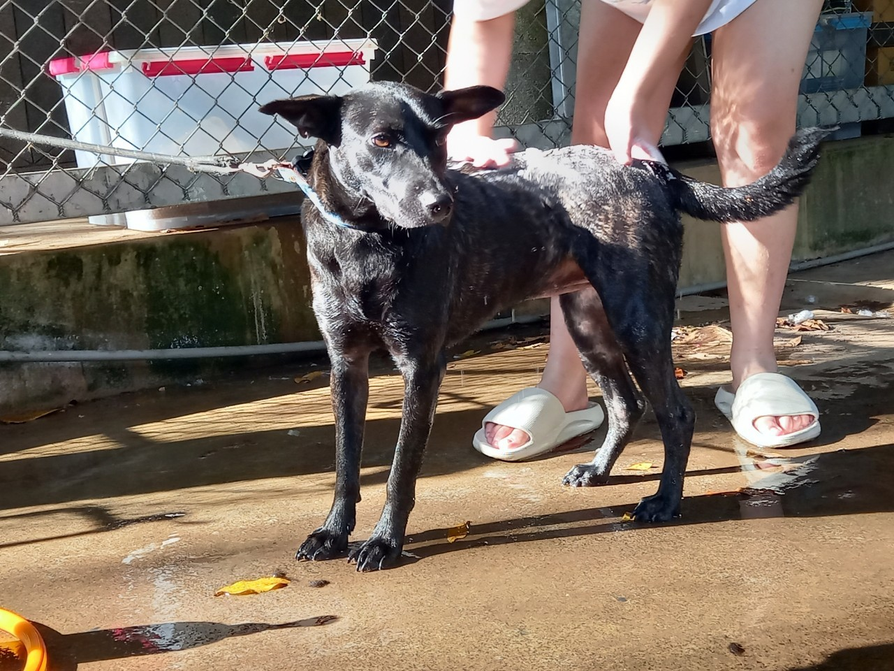

大吉
當年最年輕氣盛的大吉可以從大圍欄隔間跳到大圍欄!
現在年紀大了養老中
性別：公

小狐
小狐是在2023年加入犬舍
雖然是新人但很快地已經在犬舍擁有一席之地
性別：母

Momo
傳說中犬舍的貓貓...?
雖然身為狗但習性是貓
性別：母
小松
犬舍數一數二的元老，個性溫順
是智勇雙全的狗狗
性別：母

偽松
犬舍元老之一，喜歡被梳毛
散步後回到犬舍不要打擾我
性別：公

小綿羊
最熱情活力的阿伯
興奮的時候會一直繞圈圈跟踏步
性別：公
短短
喜歡窩在箱子裡
住在小房間後面，別忘了我呀
性別：公
諾曼
非常愛吃，看到人類就要會去撒嬌翻肚
自由的狗狗
性別：公

三星
是年輕的狗狗體力非常好
最害怕牛牛了，餵食要記得分開
性別：母

該該
大力士+1
名字的由來是小時候超打針會叫很大聲所以就叫該該
性別：公
牛牛
身為大圍欄霸主，雖然看似高傲但非常喜歡人類
和捲捲是死對頭
性別：母

小寶
極度社恐怕人
慢慢努力中有一日會變成熟悉的麻吉
性別：公
捲捲
今年的目標是努力瘦身!
和所有母狗個性不合，一定要分開
性別：母
橘子
鬼靈精怪的小傢伙
每次撒嬌嚶嚶叫最大聲
性別：母

黑桃
社恐怕生+1
但是...出門放風就會瞬間high起來!
性別：母

冰炫風
少了一截腳掌，但不影響他的活潑好動
性別：公